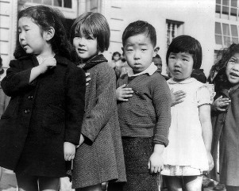

| |
|
|
| Announcements |
| |

|
| NOC Events |
|
|
| |
|
|
|  |
|
34th
Annual San Jose
Day of Remembrance
Civil
Liberties and War
Commemorating the
70th anniversary of
Korematsu v. United States
Sunday,
Feb 16, 2014
San Jose Buddhist Church Betsuin
640 N. Fifth Street, San Jose, CA
5:30-7:30pm
Event is
free and open to the public
|
| |
"As
historical precedent it (the Korematsu decision)
stands as a constant caution that in times of war
or declared military necessity our institutions
must be vigilant in protecting constitutional
guarantees. It stands as a caution that in times
of distress the shield of military necessity and
national security must not be used to protect
governmental actions from close scrutiny and
accountability. It stands as a caution that in
times of international hostility and antagonisms
our institutions, legislative, executive and
judicial, must be prepared to exercise their
authority to protect all citizens from the petty
fears and prejudices that are so easily aroused."
|
|
- US District Court Judge Marilyn Hall Patel
|
The 2014 San Jose Day of
Remembrance commemorates the signing of
Executive Order 9066,
which led to the forced incarceration of 120,000 people of
Japanese descent, two-thirds of whom were American
citizens. This year’s event features speakers: Dale
Minami, the lead attorney on the legal team that
overturned the conviction against Fred Korematsu, who
defied the World War II Japanese American mass
incarceration order which led to the controversial United
States Supreme Court case, Korematsu
v. United States;
Congressman Mike Honda, and Japanese American Museum
of San Jose (JAMsj) former president and current board
member, Joe Yasutake.
The event will also recognize the 70th anniversary of the
landmark Korematsu v. United States Supreme Court case.
In 1942, Fred Korematsu refused to comply with the
executive order and did not go to the government’s
incarceration camps for Japanese Americans. After
Korematsu was arrested and convicted of defying the
government’s order, he appealed his case all the way to
the Supreme Court. In 1944, the Supreme Court ruled
against him, arguing that the incarceration was justified
due to military necessity.
In 1983, University of
California San Diego professor Peter Irons and researcher
Aiko Herzig-Yoshinaga discovered Deparment of
Justice documents that revealed that "the government
knowingly withheld information from the courts when they
were considering the critical question of military
necessity in this case"
[1]. The documents demonstrated that Japanese
Americans had committed no acts of treason to justify mass
incarceration. With this new evidence, a pro-bono legal
team that included attorney Dale Minami and the Asian Law
Caucus, re-opened Korematsu’s 40-year-old case on the
basis of government misconduct. On November 10, 1983,
Korematsu’s conviction was overturned in a federal court
in San Francisco. It was a pivotal moment in civil rights
history.
[1] Court Reverses Korematsu Conviction - Korematsu v.
U.S., 584 F.Supp. 1406, 16 Fed. R. Evid. Serv. 1231
(N.D.Cal. Apr 19, 1984)
Featured Speakers
Dale Minami
Dale
Minami is a partner with Minami Tamaki LLP and is
considered as one of the top personal injury lawyers in he
San Francisco Bay Area. He was selected by Law & Politics
Magazine as a Super Lawyer for each year from 2004 through
2013 and one of the 500 hundred Best Lawyers in America by
Lawdragon Magazine in 2005 and in the top 3% of attorneys
in the nation by The Legal News.
President Clinton
appointed him as Chair of the Civil Liberties Public
Education Fund in January 1996. Mr. Minami has served as a
member of the California Fair Employment and Housing
Commission and has chaired the California Attorney
General's Asian Pacific Advisory Committee, advising the
State's Attorney General on key issues. He has also served
as a Commissioner on the State Bar's Commission on
Judicial Nominee's Evaluation, and on Senator Barbara
Boxer's Judicial Screening Committee, which made
recommendations for federal judicial appointments.
Minami was a co-founder of the Asian Law Caucus, the first
community interest law firm serving Asian Pacific
Americans in the country; a co-founder of the Asian
American Bar Association of the Greater Bay Area, the
first Asian American Bar Association in the United States;
the Asian Pacific Bar of California; and the Coalition of
Asian Pacific Americans, one of the nation’s first
political action committees focused on Asian American
candidates and issues.
Joe Yasutake
Joe
Yasutake will be offering his remembrances of being
incarcerated in different Japanese American internment
camps during World War II. Joe has been one of the
key contributors in shaping the vision of the
Japanese American Museum of
San Jose (JAMsj) and San Jose Japantown.
He has been a past president of JAMsj and is
currently serving as a board member. Previously, he held
several leadership positions within San Jose Japantown,
including the first president of the Japantown Community
Congress (JCCsj) and chair of the Council of Ministries at
Wesley United Methodist Church. Additionally, he has
spearheaded the development of many historical landmarks
seen throughout Japantown.
In his professional
life, Yasutake earned a Ph.D in Industrial Psychology from
Ohio State University and spent most of his professional
career as a psychologist and manager for the U.S. Air
Force. Joe finished up his career working on a joint
Japan-U.S. research program on reducing human errors in
electric and nuclear power plant operations.
Click
here to read a story about Joe Yasutake's
recollections of Executive Order 9066 and the subsequent
impact on his family.
9-year old Joe
Yasutake is seen in this photograph carrying his
belongings for the journey from the Puyallup Assembly
Center to the camp in Minidoka, Idaho.
Congressman Mike Honda
U.S.
Congressman Michael Honda represents the 17th
Congressional District of California and has served in the
U.S. House of Representatives for over twelve years. In
Congress, Rep. Honda is a member of the powerful House
Appropriations Committee, Chair Emeritus of the
Congressional Asian Pacific American Caucus, Co-chair of
the Democratic Caucus’ New Media Working Group, and House
Democratic Senior Whip.
Representative Mike Honda
was born in California, but spent his early childhood with
family in the Amache internment camp in Colorado during
World War II. Mike’s father served in the Military
Intelligence Service, while his mother served as a full
time homemaker. His family returned to California in
1953, becoming strawberry sharecroppers in San José's
Blossom Valley. In 1965, Mike enrolled in the Peace Corps
for two years in El Salvador and returned fluent in
Spanish and with a passion for teaching.
In his
career as an educator, Mike was a science teacher, served
as a principal at two public schools, and conducted
educational research at Stanford University. In 1971,
Mike was appointed by then-Mayor Norm Mineta to San Jose's
Planning Commission. In 1981, Mike won his first election,
gaining a seat on the San José Unified School Board. In
1990, Mike was elected to the Santa Clara County Board of
Supervisors. Mike served in the California State Assembly
from 1996 to 2000. In 2000, Mike was elected to the U.S.
House of Representatives. He is currently the Chairman
Emeritus of the Congressional Asian Pacific American
Caucus (CAPAC) after spending seven years as Chairman.
Mike’s district includes Silicon Valley, the
birthplace of technology innovation and now the country’s
leading developer of green technology. Mike has dedicated
his life to public service and is lauded for his work on
education, civil rights, national service, immigration,
transportation, the environment, and high-tech issues.
|
The Civil
Liberties Act of 1988 stated that the
government’s actions “were motivated largely
by racial prejudice, wartime hysteria, and a
failure of political leadership.” |
| Day of Remembrance
candlelight ceremony honors internees, war
veterans, and people who were displaced by
EO 9066. Photo courtesy of Andy Frazer. |
 |
|
The
program also includes a performance from
internationally acclaimed San Jose
Taiko, a
candle-lighting ceremony and remembrance, and the
traditional candlelight procession through
historic Japantown. For more information, email info@sjnoc.org or visit www.sjnoc.org. |
| The San Jose Day of
Remembrance brings multiple communities
together to build trust, respect, and
understanding. Photo courtesy of Andy
Frazer. |
The Day of
Remembrance is an event that aims to bring
different communities together in order to build
trust, respect, and understanding among all
people and to renew our pledge to fight for
equality, justice, and peace. Please plan on
attending to help us all remember what happened
and ensure that such injustices never occur
again.
|
|
| |
|
|
|